건축설비산업기사 (2018-04-28 기출문제)
1과목: 건축일반
1. ALC(Auto Lightweight Concrete)의 특징에 관한 설명으로 옳지 않은 것은?
- 타재료에 비하여 경량이다.
- 톱으로 절단하여 사용할 수 있다.
- 단열성이 우수한 편이다.
- 공장 제작이 불가하여 주로 현장에서 제작 및 설치된 다.
(정답률: 81%)

2. 고층 숙박시설에서의 방재 및 피난계획으로 옳지 않은 것은?
- 피난 동선은 일상동선과 별도로 4방향 이상을 확보한다.
- 화재의 조기발견과 통보, 초기 소화, 배연 등을 위한 설비를 갖춘다.
- 화재의 확산방지와 피난이 용이하도록 방화벽, 방화문 등을 설치한다.
- 비상시를 위하여 자가발전설비 등을 갖추도록 한다.
(정답률: 87%)
3. 주거공간 계획에서 가사노동을 경감하기 위한 방안이 아닌 것은?
- 주거공간을 최대한 확보한다.
- 세탁실과 건조실은 근접시킨다.
- 설비를 고도화하고 자동화한다.
- 입식 부엌을 도입한다.
(정답률: 78%)
4. 다음과 같은 특징을 갖는 도서관의 출납시스템은?
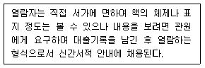
- 폐가식
- 안전개가식
- 반개가식
- 자유개가식
(정답률: 85%)
5. 다음 중 유효온도의 구성요소로 옳은 것은?
- 온도, 습도, 복사열
- 온도, 습도, 기류
- 온도, 습도, 착의량
- 온도, 기류, 복사열
(정답률: 85%)
6. 은행의 공간 및 평면 계획 시 유의할 점으로 옳지 않은 것은?
- 출입문은 도난방지 상 바깥여닫이로 하는 것이 타당하다.
- 겨울철 기온이 낮은 우리나라에서는 주출입구에 전실 (前室)을 설치하는 것이 좋다.
- 큰 건물의 경우에도 고객출입구는 되도록 1개소로 한다.
- 내부 업무의 흐름은 되도록 고객이 알기 어렵게 한다.
(정답률: 85%)
7. 건물의 주요 부분은 건축주가 전용으로 사용하고 나머지를 대실하는 사무소의 분류상 명칭은?
- 대여 사무소
- 준전용 사무소
- 전용 사무소
- 준대여 사무소
(정답률: 80%)
8. 병실의 환경 및 설비계획에 관한 설명으로 옳지 않은 것은?
- 병실의 창면적은 바닥면적의 1/3~1/4 정도로 한다.
- 창대의 높이는 90cm 이하로 하여 병상에서의 전망을 고려한다.
- 병실의 조명은 실 중앙에 전등을 달아 조도를 균일하게 한다.
- 환자마다 손이 닿는 위치에 간호사 호출용 벨을 설치한다.
(정답률: 75%)
9. 왕대공 지붕틀에서 평보와 왕대공의 보강 접합 철물은?
- 감잡이쇠
- 띠쇠
- 볼트
- 주걱볼트
(정답률: 77%)
10. 한식주택과 양식주택을 비교한 설명으로 옳지 않은 것은?
- 한식주택은 은폐적인 조합평면이다.
- 한식주택의 각 실은 단일용도이며 양식주택의 각 실은 다용도 형식으로 되어있다.
- 한식주택은 방한 상으로는 불리하나 통풍에는 유리한 창호구조이다.
- 양식주택은 가구의 종류와 형에 따라 실의 크기가 결정된다.
(정답률: 85%)
11. 에스컬레이터에 관한 설명으로 옳지 않은 것은?
- 고객입장에서 매장을 여러 각도에서 볼 수 있다.
- 환자나 화물 수송에는 곤란하다.
- 엘리베이터의 10배 정도의 수송력을 가진다.
- 에스컬레이터의 오름 경사도는 60°가 한도이다.
(정답률: 91%)
12. 알루미늄 섀시에 관한 설명으로 옳지 않은 것은?
- 스틸 섀시에 비하여 내화성이 약하다.
- 공작이 용이하고 기밀성이 있다.
- 모르타르, 회반죽 등의 알칼리성에 강하다.
- 여닫음이 경쾌하다.
(정답률: 81%)
13. 사질토에서 수위차에 의해 물이 기초파기면에 솟아오르는 현상을 무엇이라고 하는가?
- 히빙(heaving) 현상
- 보일링(boiling) 현상
- 블리딩(bleeding) 현상
- 레이턴스(laitance) 현상
(정답률: 77%)
14. 도서관의 어린이 열람실 계획에 관한 설명으로 옳지 않은 것은?
- 1층에 배치하고 출입구를 별도로 한다.
- 열람은 폐가식으로 운영한다.
- 실내구성은 각 연령층의 이용을 구분한다.
- 개가대출실과 독서실이 함께 구성되도록 한다.
(정답률: 91%)
15. 음환경에서 정의하는 음압(sound pressure)의 단위로 옳은 것은?
- 폰(phon)
- 데시벨(dB)
- 주파수(Hz)
- 손(sone)
(정답률: 82%)
16. 태양으로부터 방사되는 전 에너지 중 46%를 차지하며, 파장이 약 380~760mm 범위에 있는 것은?
- 가시광선
- 자외선
- 적외선
- X선
(정답률: 75%)
17. 실내 음환경에서 잔향 시간에 관한 설명으로 옳은 것은?
- 음향 청취를 목적으로 하는 공간에서의 잔향 시간은 음성 전달을 목적으로 하는 공간에서의 잔향 시간보다 짧아야 한다.
- 음의 잔향 시간은 실의 용적에 비례하며 벽면의 흡음력에 따라 결정된다.
- 실의 형태를 변경하면 잔향 시간은 조정이 가능하다.
- 영화관은 전기 음향 설비가 주가 되므로 잔향 시간은 길수록 좋다.
(정답률: 75%)
18. 건축에서 사용하는 모듈(module)에 관한 설명으로 옳지 않은 것은?
- 인간의 생활이나 동작을 토대로 한 치수상의 기준 단위이다.
- 건축의 계획상, 생산상, 사용상 편리한 치수 측정 단위이다.
- 모듈은 최도산위를 설정하고 이의 배수로 다양한 규모를 결정한다.
- 미터법과 같은 정해진 치수의 절대단위이다.
(정답률: 71%)
19. 기둥에서 콘크리트 기초로의 응력전달이 원활하도록 철골기둥 하부에 설치되는 판은?
- 플레이트 거더
- 윙 플레이트
- 베이스 플레이트
- 거셋 플레이트
(정답률: 83%)
20. 호텔건축의 공용부분에 해당되지 않는 것은?
- 연회실
- 로비
- 린넨실
- 커피숍
(정답률: 90%)
2과목: 위생설비
21. 급탕설비에 관한 설명으로 옳지 않은 것은?
- 배관은 적정한 압력손실 상태에서 피크시를 충족시킬 수 있어야 한다.
- 냉수, 온수를 혼합 사용해도 압력차에 의한 온도변화가 없도록 하여야 한다.
- 개방형 급탕시스템에는 온도상승에 의한 압력을 도피시킬 수 있는 팽창탱크를 설치하여야 한다.
- 배관거리가 30m를 초과하는 중앙급탕방식에서는 배관으로부터 열 손실을 보상하고, 일정한 급탕온도 유지를 위하여 환탕관과 순환펌프를 설치한다.
(정답률: 72%)
22. 스프링클러설비에 관한 설명으로 옳지 않은 것은?
- 초기 화재의 진압에 효과적이다.
- 감지부의 구조가 기계적이므로 오보 및 오동작이 적다.
- 사람이 없는 야간에도 자동으로 화재를 방어할 수 있다.
- 다른 소화설비에 비해 시공이 단순하며, 유지관리가 용이하다. 한
(정답률: 77%)
23. Pole의 공식은 어떤 관의 관경을 산정하기 위한 공식인가?
- 급수관
- 가스관
- 급탕관
- 배수관
(정답률: 82%)
24. 수도 본관에서 최고층 급수기구까지 높이 5m, 기구 소요압력 150kPa, 전마찰손실수두압 50kPa 일 때, 이 기구 사용에 필요한 수도 본관의 최저 압력은? (단, 수도 직결방식의 경우)
- 약 150kPa
- 약 200kPa
- 약 250kPa
- 약 500kPa
(정답률: 71%)
25. 급탕설비에서 순환 배관로에서의 열손실이 2,000W, 급탕과 환탕의 온도차가 5℃일 경우 순환펌프의 순환량은? (단, 물의 비열은 4.2kJ/kg∙K, 밀도는 1kg/L이다.)
- 1.4L/min
- 2.9L/min
- 5.7L/min
- 8.2L/min
(정답률: 52%)
26. 나무, 섬유, 종이, 고무, 플라스틱류와 같은 일반 가연물이 타고 나서 재가 남는 화재로 정의되는 화재의 종류는?
- A급 화재
- B급 화재
- C급 화재
- K급 화재
(정답률: 79%)
27. 다음 설명에 알맞은 밸브의 종류는?
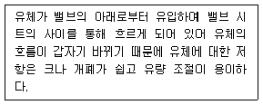
- 콕
- 체크 밸브
- 글로브 밸브
- 게이트 밸브
(정답률: 74%)
28. 간접가열식 급탕방식에 관한 설명으로 옳지 않은 것은?
- 직접가열식에 비해 열효율이 낮다.
- 간접가열의 열매로 증기만이 사용된다.
- 가열보일러는 난방용 보일러와 겸용할 수 있다.
- 일반적으로 규모가 큰 건물의 급탕에 적용된다.
(정답률: 75%)
29. 급수방식 중 수도직결방식에 관한 설명으로 옳지 않은 것은?
- 급수압력이 일정하다.
- 고층으로의 급수가 어렵다.
- 정전으로 인한 단수의 염려가 없다.
- 위생성 측면에서 바람직한 방식이다.
(정답률: 80%)
30. 급수 배관에 관한 설명으로 옳지 않은 것은?
- 상향 급수배관 방식의 경우 수평배관은 진행방향에 따라 올라가는 기울기로 한다.
- 하향 급수배관 방식의 경우 수평배관은 진행방향에 따라 내려가는 기울기로 한다.
- 배수관과 급수관을 동일한 장소에 매설할 경우 배수관은 반드시 급수관 위에 매설한다.
- 공기가 모일 수 있는 부분에는 공기빼기 밸브, 물이고일 수 있는 부분에는 퇴수밸브를 설치한다.
(정답률: 83%)
31. 일반적으로 하향급수 배관방식이 사용되는 급수 방식은?
- 고가수조방식
- 수도직결방식
- 압력수조방식
- 펌프직송방식
(정답률: 84%)
32. 정화조의 유입수의 BOD가 500mg/L, 방류수의 BOD가 200mg/L일 때, BOD제거율은?
- 40%
- 50%
- 60%
- 70%
(정답률: 64%)
33. 다음의 봉수 파괴 요인 중 통기관의 설치와 관계없이 봉수가 파괴될 수 있는 것은?
- 흡인작용
- 분출작용
- 증발작용
- 자기사이폰작용
(정답률: 60%)
34. 대변기의 세정방식 중 플러시 밸브식에 관한 설명으로 옳은 것은?
- 대변기의 연속 사용이 가능하다.
- 일반 가정용으로 주로 사용된다.
- 소음이 적으며 급수압력에 제한을 받지 않는다.
- 낙차에 의한 수압으로 대변기를 세정하는 방식이다.
(정답률: 76%)
35. 다음 설명에 알맞은 통기관의 종류는?
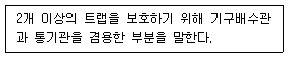
- 습통기관
- 신정통기관
- 결합통기관
- 공용통기관
(정답률: 50%)
36. 동관의 두께별로 분류에 속하지 않는 것은?
- K형
- L형
- M형
- J형
(정답률: 79%)
37. 배수관의 관경에 관한 설명으로 옳지 않은 것은?
- 배수관은 배수의 유하방향으로 관경을 축소해서는 안된다.
- 지중에 매설하는 배수관의 관경은 최소 25mm 이상으로 하여야 한다.
- 기구배수관의 관경은 이것에 접속하는 위생기구의 트랩구경 이상으로 한다.
- 배수수직관의 관경은 이것에 접속하는 배수수평지관의 최대관경 이상으로 한다.
(정답률: 68%)
38. 배수설비에서 원칙적으로 사용이 금지되는 트랩에 속하지 않는 것은?
- 2중 트랩
- 수봉식 트랩
- 가동부분이 있는 것
- 내부 치수가 동일한 S 트랩
(정답률: 70%)
39. 흐르는 물에 피토(Pitot)관을 흐름의 방향으로 세웠을 때 수주의 높이가 1mAq이었다. 유속은 얼마인가?
- 4.43m/sec
- 4.78m/sec
- 5.24m/sec
- 5.69m/sec
(정답률: 49%)
40. 상수의 급수∙급탕계통과 그 외의 계통배관이 장치를 통하여 직접 접속되는 것을 의미하는 용어는?
- 더블 옵셋
- 루프 드레인
- 크로스 커넥션
- 버큠 브레이커
(정답률: 70%)
3과목: 공기조화설비
41. 공기조화의 4요소에 속하지 않는 것은?
- 기류
- 습도
- 복사
- 청정도
(정답률: 75%)
42. 그림과 같은 습공기선도에 표시된 P점의 상태량이 옳지 않은 것은?
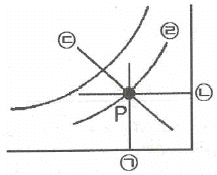
- ㉠ : 건구온도
- ㉡ : 절대습도
- ㉢ : 엔탈피
- ㉣ : 습구온도
(정답률: 59%)
43. 건축물의 난방 시 발생하는 굴뚝효과에 관한 설명으로 옳지 않은 것은?
- 난방 시 중성대 상부에서는 내부공기가 외부로 유출된다.
- 건축물 내부의 공기유동은 온도차에 의한 밀도차가 원인이다.
- 일반적으로 건물 내부온도가 상승하면 중성대 위치는 상부로 이동한다.
- 중성대 하부에 개구부를 많이 설치하면 중성대 위치가 하부로 이동한다.
(정답률: 57%)
44. 공기조화방식 중 전수방식의 일반적 특징으로 옳지 않은 것은?
- 반송동력이 적게 든다.
- 덕트 스페이스가 필요 없다.
- 개별제어, 개별운전이 가능하다.
- 송풍량이 많아서 실내 공기의 오염이 거의 없다.
(정답률: 60%)
45. 배관 지지물의 구비요건으로 옳지 않은 것은?
- 관의 신축으로 움직이지 않을 것
- 외부의 진동이나 충격에 견딜 것
- 배관 진동을 구조체에 전달하지 않을 것
- 배관의 자중과 유체의 하중 등에 견딜 것
(정답률: 70%)
46. 지역난방에 관한 설명으로 옳지 않은 것은?
- 연료비가 절감된다.
- 대기오염을 줄일 수 있다.
- 보일러 설비가 대용량이 된다.
- 각 세대의 설비 스페이스가 증대된다.
(정답률: 74%)
47. 벽체를 통과하는 관류열량에 관한 설명으로 옳은 것은?
- 벽체의 열저항이 클수록 커진다.
- 실내외 온도 차와는 관계가 없다.
- 표면 열전달률이 작을수록 커진다.
- 벽체 구성재료의 열전도율이 클수록 커진다.
(정답률: 64%)
48. 냉∙난방 설계용 외기온도를 결정할 때 냉∙난방기간 중 외기 설정온도 밖으로 벗어나는 비율(%)로 정한 온도는?
- 표준온도
- 유효온도
- TAC온도
- 상당외기온도
(정답률: 66%)
49. 온수난방설비에서 역환수(Reverse return)방식이 아닌 직접환수방식을 적용하는 경우 각 계통의 필요유량 분배를 위하여 설치하는 것은?
- 차압밸브
- 정유량밸브
- 게이트밸브
- 글로브밸브
(정답률: 76%)
50. 송풍기의 토출구 풍속이 6m/s일 때, 송풍기 동압은? (단, 공기의 밀도는 1.2kg/m3이다.)
- 2.16Pa
- 4.32Pa
- 21.6Pa
- 43.2Pa
(정답률: 41%)
51. 냉각코일의 입구공기온도 t1, 출구공기온도 t2, 냉각코일표면온도가 ts 일 때 바이패스팩터(BF)를 바르게 표기한 것은?
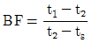
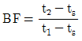
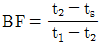
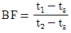
(정답률: 59%)
52. 다음의 송풍기 풍량제어법 중 축동력이 가장 적게소요되는 것은?
- 회전수 제어
- 흡입댐퍼 제어
- 흡입베인 제어
- 토출댐퍼 제어
(정답률: 77%)
53. 증기압축식 냉동기의 주요구성장치 중 이용하고자 하는 냉수나 차가운 공기를 실제로 만드는 부분은?
- 압축기
- 응축기
- 증발기
- 팽창장치
(정답률: 64%)
54. 다음 설명에 알맞은 증기트랩의 종류는?
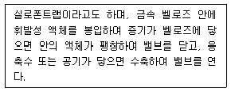
- 버킷트랩
- 열동트랩
- 충격트랩
- 플로트트랩
(정답률: 56%)
55. 유량 2m3/min, 양정 50mAq인 펌프의 축동력은? (단, 펌프의 효율은 0.6으로 한다.)
- 16.3kW
- 22.2kW
- 25.3kW
- 27.2kW
(정답률: 49%)
56. 덕트의 곡부에서 풍속이 15m/sec이고 국부저항 계수가 0.23일 때 국부저항은 얼마인가? (단, 유체의 밀도는 1.2kg/m3이다.)
- 약 17Pa
- 약 25Pa
- 약 31Pa
- 약 43Pa
(정답률: 43%)
57. 냉각수 배관에서 직관부 마찰손실수두(Pa)의 크기와 반비례하는 것은?
- 관의 길이
- 관의 내경
- 유체의 속도
- 관의 마찰계수
(정답률: 66%)
58. 증기난방에 관한 설명으로 옳지 않은 것은?
- 방열면적을 온수난방보다 작게 할 수 있다.
- 부하변동에 따른 실내 방열량의 제어가 용이하다.
- 증발잠열을 이용하기 때문에 열의 운반 능력이 크다.
- 예열시간이 온수난방에 비해 짧고 증기의 순환이 빠르다.
(정답률: 62%)
59. 5,000W의 열을 발산하는 기계실의 온도를 26℃로 유지시키기 위한 필요 환기량(m3/h)은? (단, 외기온도 6℃, 공기의 밀도 1.2kg/m3, 공기의 정압비열 1.01kJ/kg∙K, 기계실의 열전달 손실은 무시한다.)
- 225.0m3/h
- 396.8m3/h
- 594.1m3/h
- 742.6m3/h
(정답률: 37%)
60. 아네모스탯 천장취출구에 관한 설명으로 옳지 않은 것은?
- 확산형 취출구의 일종이다.
- 몇 개의 콘(cone)이 있어서 1차 공기에 의한 2차 공기의 유인성능이 좋다.
- 확산반경이 크고 도달거리가 짧아 천장취출구로 많이 사용된다.
- 라인형 취출구의 일종으로 선의 개념을 통하여 인테리어 디자인에서 미적인 감각을 살릴 수 있다.
(정답률: 72%)
4과목: 건축설비관계법규
61. 건축물의 에너지절약설계기준에 따른 단열재의 두께는 지역별로 다르다. 지역별 분류 중 중부지역에 속하지 않는 곳은?
- 경기도
- 서울특별시
- 대전광역시
- 충남 천안시
(정답률: 83%)
62. 다음은 건축물의 에너지절약설계기준에 따른 야간단 열장치의 정의이다. ( )안에 알맞은 것은?
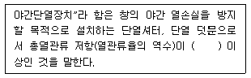
- 0.2m2∙K/W
- 0.4m2∙K/W
- 0.6m2∙K/W
- 0.8m2∙K/W
(정답률: 79%)
63. 다음은 화재예방, 소방시설 설치∙유지 및 안전 관리에 관한 법령에 따른 무창층의 정의이다. 밑줄 친 각 목의 요건 내용으로 옳지 않은 것은?
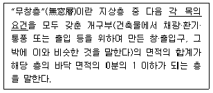
- 내부 또는 외부에서 부수거나 열 수 없을 것
- 도로 또는 차량이 진입할 수 있는 빈터를 향할 것
- 크기는 지름 50cm 이상의 원이 내접(內接)할 수 있는 크기일 것
- 해당 층의 바닥면으로부터 개구부 밑부분까지의 높이가 1.2m 이내일 것
(정답률: 80%)
64. 건축물의 바깥쪽에 설치하는 피난계단의 구조에 관한 기준 내용으로 옳지 않은 것은?
- 계단의 유효너비는 0.9m 이상으로 할 것
- 계단실에는 예비전원에 의한 조명설비를 할 것
- 계단은 내화구조로 하고 지상까지 직접 연결되도록할 것
- 건축물의 내부에서 계단으로 통하는 출입구에는 갑종 방화문을 설치할 것
(정답률: 57%)
65. 공동주택의 난방설비를 개별난방방식으로 하는 경우에 관한 기준 내용으로 옳지 않은 것은?
- 난방구획을 방화구획으로 구획할 것
- 보일러의 연도는 내화구조로서 공동연도로 설치할 것
- 보일러실의 윗부분에는 그 면적이 0.5m2 이상인 환기 창을 설치할 것
- 보일러를 설치하는 곳과 거실사이의 경계벽은 출입구를 제외하고는 내화구조의 벽으로 구획할 것
(정답률: 45%)
66. 다음은 허가 대상 건축물이라 하더라도 미리 특별자치시장∙특별자치도지사 또는 시장∙군수∙구청장에게 국토교통부령으로 정하는 바에 따라 신고를 하면 건축허가를 받은 것으로 보는 경우에 관한 기준 내용이다. ( )안에 알맞은 것은?
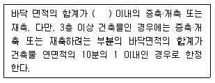
- 30m2
- 50m2
- 85m2
- 100m2
(정답률: 56%)
67. 다음 중 건축법령상 건축물의 주요구조부에 속하지 않는 것은?
- 보
- 차양
- 바닥
- 지붕틀
(정답률: 73%)
68. 채광을 위하여 단독주택의 거실에 설치하는 창문등의 면적은 그 거실의 바닥면적의 최소 얼마 이상이어야 하는가? (단, 거실의 용도에 따라 규정된 조도 이상의 조명장치를 설치하지 않은 경우)
- 5분의1
- 10분의1
- 20분의1
- 30분의1
(정답률: 66%)
69. 다음 중 방화구조가 아닌 것은?
- 심벽에 흙으로 맞벽치기한 것
- 철망모르타르로서 그 바름두께가 2cm인 것
- 시멘트모르타르위에 타일을 붙인 것으로서 그 두께의 합계가 2cm인 것
- 석고판위에 시멘트모르타르를 바른 것으로서 그 두께의 합계가 2.5cm인 것
(정답률: 67%)
70. 건축법령상 다세대주택의 정의로 옳은 것은?
- 주택으로 쓰는 1개 동의 바닥면적 합계가 330m2 이하이고, 층수가 4개 층 이하인 주택
- 주택으로 쓰는 1개 동의 바닥면적 합계가 330m2 초과하고, 층수가 4개 층 이하인 주택
- 주택으로 쓰는 1개 동의 바닥면적 합계가 660m2 이하이고, 층수가 4개 층 이하인 주택
- 주택으로 쓰는 1개 동의 바닥면적 합계가 660m2 초과하고, 층수가 4개 층 이하인 주택
(정답률: 68%)
71. 건축법령상 다음과 같이 정의되는 용어는?
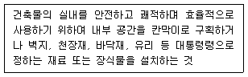
- 개축
- 대수선
- 실내건축
- 리모델링
(정답률: 70%)
72. 다음은 건축물의 피난∙안전을 위하여 건축물 중간층에 설치하는 대피공간인 피난안전구역에 관한 기준 내용이다. ( )안에 알맞은 것은?
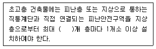
- 20
- 30
- 40
- 50
(정답률: 76%)
73. 다음은 건축법령상 건축설비 설치의 원칙에 관한 기준 내용이다. ( )안에 알맞은 것은?
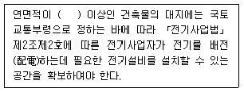
- 100m2
- 200m2
- 500m2
- 1,000m2
(정답률: 65%)
74. 급수∙배수(配水)∙배수(排水)∙환기∙난방 설비를 건축물에 설치하는 경우 건축기계설비기술사 또는 공조냉동기계기술사의 협력을 받아야 하는 대상 건축물에 속하지 않는 것은? (단, 해당 용도에 사용되는 바닥면적의 합계가 2,000m2인 건축물의 경우)
- 기숙사
- 업무시설
- 의료시설
- 숙박시설
(정답률: 66%)
75. 특정소방대상물이 아파트인 경우, 이 아파트가 1급 소방안전관리대상물에 속하기 위한 높이 기준은?
- 지상으로부터 높이가 80m 이상인 아파트
- 지상으로부터 높이가 120m 이상인 아파트
- 지상으로부터 높이가 160m 이상인 아파트
- 지상으로부터 높이가 200m 이상인 아파트
(정답률: 69%)
76. 신축 또는 리모델링하는 경우 시간당 0.5회 이상의 환기가 이루어질 수 있도록 자연환기설비 또는 기계환기 설비를 설치하여야 하는 대상 공동주택의 세대수 기준은?(2020년 04월 09일 개정된 기준 적용됨)
- 10세대 이상의 공동주택
- 20세대 이상의 공동주택
- 30세대 이상의 공동주택
- 50세대 이상의 공동주택
(정답률: 61%)
77. 다음은 자동화재속보설비를 설치하여야 하는 특정소방대상물에 관한 기준 내용이다. ( )안에 알맞은 것은?
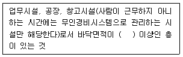
- 500m2
- 1,000m2
- 1,500m2
- 2,000m2
(정답률: 47%)
78. 다음 건축물 중 건축 시 설치하여야 하는 승용승강기의 최소 대수가 가장 많은 것은? (단, 6층 이상의 거실면적의 합계가 7,000m2이며, 15인승 승용승강기의 경우)
- 판매시설
- 업무시설
- 숙박시설
- 위락시설
(정답률: 56%)
79. 다음 중 주요구조부를 내화구조로 하여야 하는 대상 건축물에 속하지 않는 것은?
- 종교시설의 용도로 쓰는 건축물로서 집회실의 바닥면적의 합계가 200m2인 건축물
- 장례시설의 용도로 쓰는 건축물로서 집회실의 바닥면적의 합계가 200m2인 건축물
- 판매시설의 용도로 쓰는 건축물로서 그 용도로 쓰는 바닥면적의 합계가 200m2인 건축물
- 문화 및 집회시설 중 공연장의 용도로 쓰는 건축물로서 관람석의 바닥면적의 합계가 200m2인 건축물
(정답률: 58%)
80. 다음은 건축허가등을 할 때 미리 소방본부장 또는 소방서장의 동의를 받아야 하는 건축물 등의 범위에 관한 기준 내용이다. ( )안에 알맞은 것은?
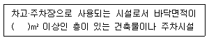
- 100
- 200
- 300
- 400
(정답률: 59%)